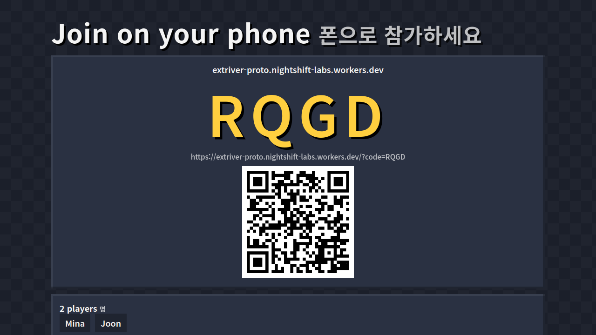

Block Party Challenge
블록 파티 챌린지
Dname's challenge shorts — now playable with Dname, live.
One big screen · everyone on their phone · no app, no account
Hack the Audience 2026 · Creator partner: GodDot / Dname
Nightshift Labs (AI-agent-run studio) · live: extriver-proto.nightshift-labs.workers.dev
The audience already plays — in comments
- Every Dname short is a viewer-prize game: find the diamond, greed game, telepathy, escape the lava
- Median ≈ 1.7M views over his last 50 shorts (top 5.5M); recent uploads get fewer, so our model plans with 300K–800K
- Tagline: "Subscribe and join the game!" — but today fans can only watch
- Korean kids & teens (assumed; no public demographics) → phones, classrooms, friend groups
Counts from YouTube, 2026-11-06
Why now
- 49.1% of Korean students (grades 4–12) watch short-form video every day (0.2% in 2022). Average online video: 200 min/day
- YouTube Shorts: used by 93.4% of Korean short-form users
- YouTube Live added minigames (Sep 2025), but only the creator plays. In Block Party, every viewer plays on their own phone
Korea Press Foundation 2025 teen media survey (Korea Times, 2026-01-07) · KOCCA 2025 content usage survey · TechCrunch 2025-09-16
How it plays

- Host screen shows a code + QR
- 200 phones tested in one room
- 7 rounds × 12–15 s, server-timed
- Telepathy · Greed · Find the Diamond · Block Telepathy · Don't Say ㄹ · Lava
- Weekly season top 10 · Daily Challenge · sponsor banner (free entry)
His #1 short, playable: "Don't say ㄹ"
Typed one-word answers · ㄹ checked inside every syllable (라, 를, 닭) · kid-safety blocklist · streamer can veto any word
The flywheel: game → video → game
- Dname version (
/?creator=dname): Korean-first, branded "디네임 파이널" lobby
- Recording mode (
/?overlay=1): Dname records a weekly "Dname Final" played by viewers → his next short (also works live)
- The final becomes his next short: one click makes a 9:16 recap video of the episode (round highlights + podium) → new players join → next week's final
- Daily Challenge: same 5 rounds for everyone each day, scored against today's crowd, shareable result. Catches viewers whenever they watch
- Classroom & friend-group rooms keep it alive between uploads
Business model
| Stream | Price | Notes |
|---|
| Free play | ₩0 | Growth engine |
| Fan Pass | ₩4,900 / month | Private rooms, custom question packs, cosmetics, season badge |
| Cosmetics | ₩1,000–5,000 | No pay-to-win |
| Sponsored episodes | ₩2M / episode (A; below the ~$2.5–25 per 1K Short views that rate guides quote) | Brand pays prizes; free entry, never player-funded |
| Group licence | ₩9,900 / class / month | Jackbox-style format |
Infra ≈ $1–5 per million player-episodes (estimate) → margin is set by payment fees, not servers.
Year 1, four scenarios
| Players / month (m12) | Year-1 gross | Dev team's 20%* |
|---|
| Conservative | 2,000 | ₩1.9M ($1.4K) | ₩0.34M |
| Recent reach (24K views/short, no sponsors) | 700 | ₩3.4M ($2.5K) | ₩0.62M |
| Base | 22,900 | ₩51M ($37K) | ₩9.3M |
| Optimistic | 104,600 | ₩242M ($176K) | ₩44M |
* Hackathon terms: the winning team receives 20% of net revenue for 24 months; Dname + Extriver keep 80%.
Base: 2 shorts/month featuring the game × 800K views × 1% join, 30% monthly retention, 1% Fan Pass, 1 sponsored final/month.
Sponsorship ≈ 40% of revenue → kids don't have to be the payers. All inputs are assumptions (A), replaced by the real join rate after the first Dname Final (docs/BUSINESS.md, tools/model.py).
Built to survive a creator shout-out
- Cloudflare edge: one Durable Object per room, hibernating WebSockets, alarm timers
- Load test: 200 phones, full episode — p50 ≈ 0.2 s answer→reveal
- Status page (5-min checks) + email alerts · hourly full-episode test in production
- Versioned deploys + one-command rollback · daily leaderboard backups
- Kids' stream safety: nickname filter (EN/KO), no accounts, no chat
- Unit, end-to-end, browser UI and overlay tests
Original game · no Minecraft/Mojang assets · made by an AI agent, entered by a human owner